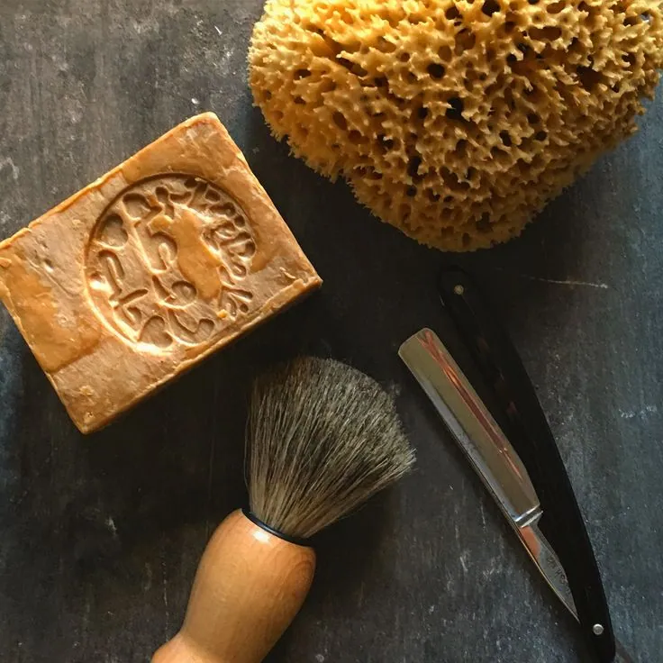

Rasage traditionnel
Le Père Lucien est né d'un savon à raser : Cyril Lelégard l'a mis au point en 2013, après treize prototypes. Nous fabriquons les savons, lotions et soins à Teillet-Argenty, et nous sélectionnons le matériel qui va avec : blaireaux, rasoirs de sûreté, coupe-choux, bols et lames.

Savons à raser 41
Le savon du barbier est saponifié à semi-ébullition à partir d'huiles végétales, de potasse et de glycérine végétale, sans conservateur ni agent…


Avant et après-rasage 25
Une lotion après-rasage referme les pores, désinfecte les micro-coupures et prolonge le parfum de votre savon. Nos lotions du barbier existent dans…
Blaireaux de rasage 32
Le blaireau monte la mousse, la fait pénétrer dans la barbe et soulève les poils avant la lame. La fibre synthétique sèche vite et convient aux…
Rasoirs de sûreté 41
Le rasoir de sûreté utilise une lame double tranchant qui coûte quelques centimes. Le peigne fermé protège la peau et convient pour débuter ; le…

Shavettes et coupe-choux 16
Le coupe-choux demande un apprentissage et un entretien (cuir d'affûtage, pierre), mais offre le rasage le plus précis. La shavette garde le geste…
Lames de rasoir 20
Chaque marque de lame a son tranchant : une lame qui convient à l'un irrite l'autre. Commencez par un assortiment, puis tenez-vous-en à celle qui…


Bols de rasage 14
Le bol sert à monter la mousse avant de l'appliquer. Nos bols en grès sont tournés par Adrien Couraud, potier : stries intérieures pour aérer la…
Accessoires de rasage 20
Un support garde le blaireau tête en bas pour qu'il sèche, une trousse protège le matériel en voyage, un cuir entretient le fil du coupe-choux.
 Le guideDébuter le rasage traditionnel : le matériel et les gestesLire le guide
Le guideDébuter le rasage traditionnel : le matériel et les gestesLire le guide
Questions fréquentes
Que faut-il pour débuter le rasage traditionnel ?
Un savon à raser, un blaireau, un rasoir de sûreté à peigne fermé et quelques lames. Notre guide détaille le choix de chaque objet.
Le rasage traditionnel irrite-t-il moins ?
Oui, en général : une seule lame coupe en un passage, et la mousse au blaireau protège mieux la peau qu'une mousse en bombe.